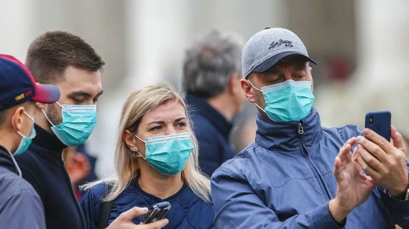

Medidas de protección básicas contra el nuevo coronavirus
Manténgase al día de la información más reciente sobre el brote de COVID-19, a la que puede acceder en el sitio web de la OMS y a través de las autoridades de salud pública pertinentes a nivel nacional y local. La COVID-19 sigue afectando principalmente a la población de China, aunque se han producido brotes en otros países. La mayoría de las personas que se infectan padecen una enfermedad leve y se recuperan, pero en otros casos puede ser más grave. Cuide su salud y proteja a los demás a través de las siguientes medidas:
-Lávese las manos frecuentemente
Lávese las manos con frecuencia con un desinfectante de manos a base de alcohol o con agua y jabón.
-Adopte medidas de higiene respiratoria
Al toser o estornudar, cúbrase la boca y la nariz con el codo flexionado o con un pañuelo; tire el pañuelo inmediatamente y lávese las manos con un desinfectante de manos a base de alcohol, o con agua y jabón.
¿Por qué? Al cubrir la boca y la nariz durante la tos o el estornudo se evita la propagación de gérmenes y virus. Si usted estornuda o tose cubriéndose con las manos puede contaminar los objetos o las personas a los que toque.

-Mantenga el distanciamiento social
Mantenga al menos 1 metro (3 pies) de distancia entre usted y las demás personas, particularmente aquellas que tosan, estornuden y tengan fiebre.
¿Por qué? Cuando alguien con una enfermedad respiratoria, como la infección por el 2019-nCoV, tose o estornuda, proyecta pequeñas gotículas que contienen el virus. Si está demasiado cerca, puede inhalar el virus
-Evite tocarse los ojos, la nariz y la boca
Las manos tocan muchas superficies que pueden estar contaminadas con el virus. Si se toca los ojos, la nariz o la boca con las manos contaminadas, puedes transferir el virus de la superficie a si mismo.
-Si tiene fiebre, tos y dificultad para respirar, solicite atención médica a tiempo
Indique a su prestador de atención de salud si ha viajado a una zona de China en la que se haya notificado la presencia del 2019-nCoV, o si ha tenido un contacto cercano con alguien que haya viajado desde China y tenga síntomas respiratorios.
¿Por qué? Siempre que tenga fiebre, tos y dificultad para respirar, es importante que busque atención médica de inmediato, ya que dichos síntomas pueden deberse a una infección respiratoria o a otra afección grave. Los síntomas respiratorios con fiebre pueden tener diversas causas, y dependiendo de sus antecedentes de viajes y circunstancias personales, el 2019-nCoV podría ser una de ellas.